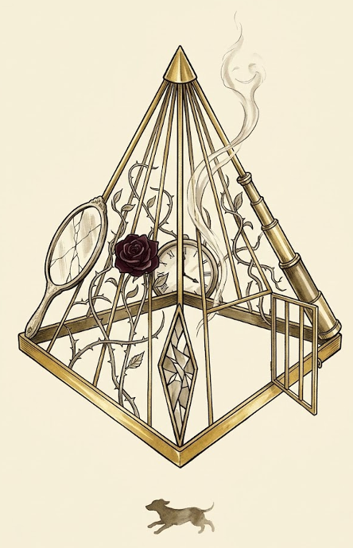

잘 되고 있는데 왜 불안한가.
네 편의 소설이 그 불안의 구조를 진단한다.

모두의창업 국가 프로젝트의 기회를 타고 한국 창업문화를 정립할 작가의 삶을 바꾼다.
창업언어와 창업소설 작문 체계를 이용해 창작을 시작할 독자의 삶을 바꾼다.
유연한 헌신을 통해 생산적인 실패를 장려할 창업 정책설계자의 삶을 바꾼다.
가설: 욕망과 믿음을 분리하고 독립적으로 갱신하면 유연한 헌신이 가능하다
가설: AI에게 감정교육이 가능하다